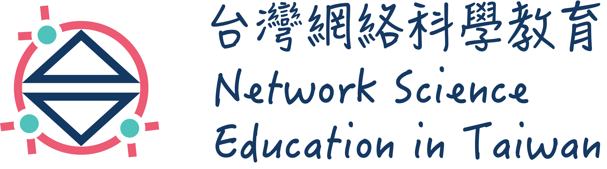

<nz-layout class="layout">
  <nz-header>
    <div class="logo">
      <a routerLink="/" (click)="logoClick();"></a>
    </div>
    <ul nz-menu [nzTheme]="'light'" [nzMode]="'horizontal'" style="line-height: 64px; font-size: 14px;">
      <li nz-menu-item routerLink="/networks">
        <i nz-icon type="share-alt" theme="outline"></i>
        生活中的網絡
      </li>
      <li nz-menu-item routerLink="/refs">
        <i nz-icon type="read" theme="outline"></i>
        參考資料
      </li>
      <li nz-menu-item routerLink="/booklet">
        <i nz-icon type="book" theme="outline"></i>
        網絡素養小冊
      </li>
    </ul>
  </nz-header>
  <router-outlet></router-outlet>
  <div style="height: 80px; background: #fff;"></div>
  <nz-footer style="text-align: center;">Copyright © 2016 – 2019 台灣網絡科學教育 | Last Updated: January 12, 2019 |
    Powered by <a
      href="https://angular.io/" target="_blank">Angular</a> and <a href="https://ng.ant.design/" target="_blank">NG-ZORRO</a>.
  </nz-footer>
</nz-layout>
